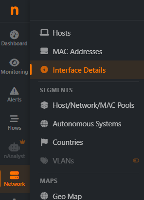
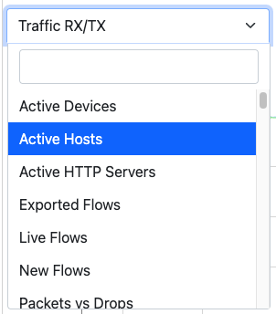
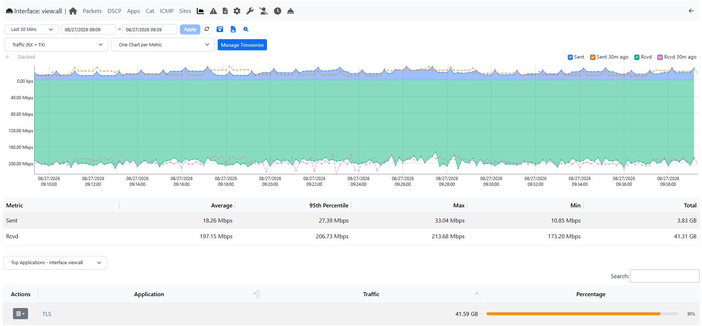
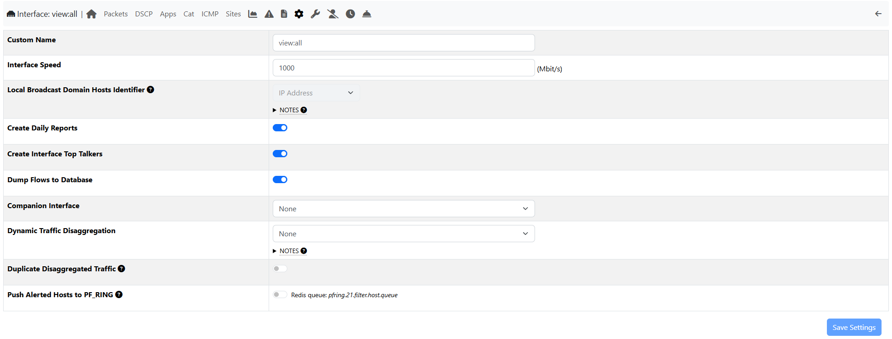
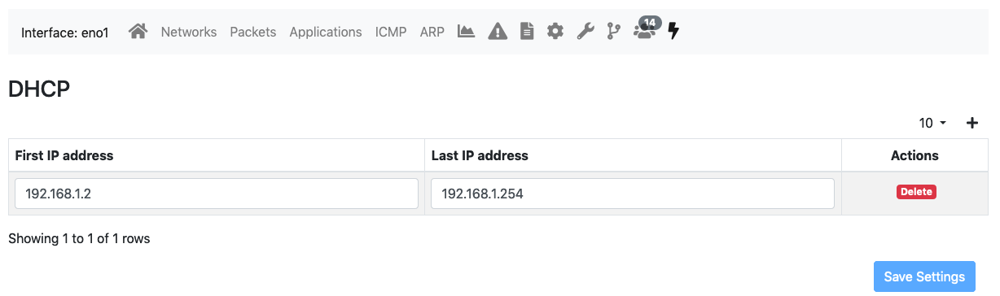
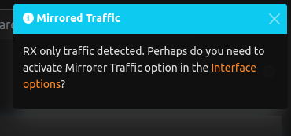

Подробности
Примечание
Ознакомьтесь с доступными типами сетевых интерфейсов. здесь

Домашний вид страницы сведений об интерфейсе
Представления интерфейса представляют собой вкладки прямо под заголовком страницы: Обзор, Сети, Протоколы, Приложения, сайты, исторические данные, профили трафика, запись, отчет и, для администраторы, Настройки. Каждая вкладка обсуждается ниже. Оповещения интерфейса и его Карты обслуживания и периодичности открываются из Обзора. Внутренности интерфейсов (хеш таблицы, периодические мероприятия, проверки) находятся в Здоровье > Статус интерфейсов > Внутренности.
В списке указаны только вкладки, относящиеся к интерфейсу: например, «Сети» только для интерфейсы, которые перехватывают пакеты. Вкладка, которая применяется но пока не может быть использован, отображается серым цветом: наведите на него указатель мыши, чтобы узнать, почему и как включить это (например, для исторических данных требуются временные серии интерфейса, включенные в «Настройки»> «Таймсерии»).
Обзор
Обзор показывает сначала самое важное, сверху вниз:
Интерфейс: его имя, его идентификатор (число ntopng присваивается каждому интерфейсу), его тип (например, PF_RING, ZMQ), скорость и MAC-адрес, а также является ли он Активный или Приостановлено. Администраторы могут приостановить мониторинг с помощью Пауза (во время паузы его трафик не обработано) и возобновите его с помощью Резюме. Кнопка ⋮ выполняет другие действия: Живой захват (загрузить файл pcap следующих секунд трафика, опционально только пакеты, соответствующие фильтр BPF), карты сервиса и периодичности, Сбросить счетчики выпадений и Сбросить все счетчики (счетчики перезапускаются с zero, исторические графики сохраняются).
Что требует внимания: отображается только тогда, когда что-то не так, например. пакеты, отброшенные интерфейс, сообщения от nProbe потеряны, потоки не экспортированы в базу данных, оповещения удалены потому что очередь оповещений была заполнена. Каждый элемент связан со своей диаграммой, если она есть.
Ключевые цифры: пропускная способность (с пакетами и новыми потоками в секунду), трафик с момента последнего сброса, активные хосты, активные потоки и задействованные оповещения (оповещения все еще выполняются). Нажмите на рисунок, чтобы открыть его страницу: графики, приложения, хосты, потоки или оповещения интерфейса.
Пропускная способность: отправлено (над линией) и получено (под ней) за последние минуты; переместить наведите указатель мыши на график, чтобы прочитать значения момента.
Трафик: как разделяется трафик между отправленными и полученными, локальными и удаленными хостами, IPv4, IPv6 и другими протоколами.
Лучшие местные хосты и Топ удаленных хостов: пять локальных и пять удаленных хостов с большая часть трафика (обновляется каждую минуту). Нажмите один, чтобы открыть его, или Все хосты для полного списка.
Топ приложений: приложения с наибольшим трафиком с момента запуска ntopng. Нажмите один чтобы увидеть его активные потоки или Все приложения для полного списка.
Источник трафика: для интерфейса, перехватывающего пакеты, его семейство, MTU, скорость и сброс пакетов; для интерфейса, собирающего потоки (соединения) из nProbe, собранные и отброшенные потоки, полученные и потерянные сообщения и подключенные экземпляры nProbe; для syslog интерфейс, собираемые и обрабатываемые логи.
Технические детали (закрыто, нажмите, чтобы открыть): системное имя интерфейса, поведение аномалии (сколько раз с момента запуска ntopng потоки или счет хоста выходили за пределы их ожидаемый диапазон), используемое им дисковое пространство, экспорт потока в базы данных, запись трафика windows и, для администраторы интерфейса ZMQ, ключ шифрования, который нужно добавить в конфигурацию nProbe.
Цифры обновляются каждые несколько секунд. Имя интерфейса можно изменить в Вкладка «Настройки».
Сети
Для интерфейсов, перехватывающих пакеты: IP-адреса интерфейса (читаются из его конфигурация; щелкните один, чтобы открыть его хост) и широковещательные домены (локальные сети, показанные на трафик ARP), каждый из которых содержит количество просмотренных пакетов ARP. Щелкните домен, чтобы увидеть его хосты. А домен отмечен Призрак не принадлежит ни одной сети адресов интерфейса: устройство может быть неправильно настроен. Администраторы могут забыть просмотренные до сих пор домены с помощью Сбросить широковещательные домены: они снова извлекаются из трафика.
Протоколы
TCP Анализ пакетов: пакеты TCP повторно отправляются (повторно передаются), принимаются не по порядку и потеряно, также как доля всех пакетов.
Распределение пакетов: как пакеты разделяются по размеру, по версии IP, по флагам TCP, по DSCP по классу (приоритет, установленный в пакетах) и по типу ARP (запросы и ответы). Размер не показано для интерфейсов, собирающих потоки; DSCP и ARP нужен интерфейс, который видит MAC адреса.
Цифры обновляются каждые несколько секунд.
Приложения
На странице приложений представлены круговые диаграммы и таблица протоколов, обнаруженных nDPI, для выбранных интерфейс. Выбирать Группировать по Приложение или Категория (группы приложений, таких как Web или Потоковая передача), чтобы просмотреть трафик по приложению или по категории.
На двух верхних круговых диаграммах ntopng показывает распространение приложений и их категоризацию. Нижний пирог На диаграмме показаны приложения, обнаруженные с помощью nDPI для активных в данный момент потоков. Все метки кликабельны и указывают на страницы подробной статистики. Круговые диаграммы Бело содержат список обнаруженных протоколов с соответствующим общим количеством трафика как в абсолютном выражении, так и в процентах от общего трафика. Выбрав любой протокол приложения, можно отобразить страницу статистики с временными диаграммами для этого протокола. протокол. Аналогично, нажав на значок лупы, можно отобразить все активные для этого потоки. протокол.

Представление «Протоколы» на странице сведений об интерфейсе
ICMP
В нижней части вкладки «Протоколы»: сообщения интерфейса ICMP (IPv4 или IPv6) и хосты, которые отправили и получили наибольшее количество ICMP пакетов.

Вид ICMP страницы сведений об интерфейсе
Сайты (Профессиональная версия)
Веб-сайты, наиболее посещаемые локальными хостами интерфейса (максимум 20), видимые в их HTTP, TLS, QUIC и DNS трафик. Выберите временной диапазон: сейчас, последние 5 минут, один час сегодняшнего дня или вчера. Требуется создание самых посещаемых сайтов, включенное в настройках.
Статистика
Страница статистики предоставляет историческую статистику трафика для выбранного интерфейса. Пользователь может выбрать фильтрацию статистику на основе протокола и отображение данных в нескольких форматах (например, байты, пакеты, потоки и т. д.). В В профессиональной версии ntopng трафик для представлений интерфейса отображается в виде стека по каждому физическому интерфейсу. Визуализацию физического интерфейса можно включить, щелкнув цветную точку слева от имени интерфейса.
Диапазон временных рядов можно настроить, выбрав значения от 5 минут до 1 года. Более того, дрель- вниз можно, нажав на сам временной ряд. Каждый щелчок увеличивает масштаб диаграммы, центрируя время. ряд вокруг точки щелчка.
Кроме того, отображаемые временные ряды можно выбрать через раскрывающееся меню с надписью «Временные ряды». Например, можно визуализировать все или только один протокол, трафик, пакеты, активные хосты и потоки и т. д. Ntopng учитывает VLAN, следовательно, если обнаружено несколько VLAN, трафик учитывается также на основе VLAN.

Раскрывающееся меню временных рядов в Просмотр статистики на странице сведений об интерфейсе

Статистический просмотр деталей интерфейса Страница (Профессиональная версия)
Самые популярные собеседники исторического интерфейса отображаются в правой части страницы и автоматически обновляются. когда указатель мыши перемещается по графику.
Профили трафика (Профессиональная версия)
Обновлен трафик каждого профиля трафика (потоки, соответствующие его фильтру) на интерфейсе. каждые несколько секунд. Щелкните профиль, чтобы просмотреть его диаграммы. Администраторы открыты Управление профилями чтобы добавить или изменить их. Дополнительную информацию смотрите далее в этом руководстве.
Запись
Администраторы записывают сюда трафик интерфейса с n2disk (непрерывный трафик запись) в трёх видах: Статус (работает или произошел сбой, временной диапазон на диске, n2disk журнал), Настройки (дисковое пространство, фильтр захвата, интеллектуальная запись, использование хранилища) и Вакансии (извлечения трафика и их файлы pcap, Enterprise M). На вкладке необходимо установить n2disk: на интерфейсах, которые перехватывают пакеты, в противном случае он отключен с указанием причины. На просмотр показаны только вакансии. Видеть Непрерывная запись трафика для подробностей.
Настройки
Администраторы меняют здесь настройки интерфейса. Только те настройки, которые применимы к интерфейс перечислены. После изменения полоска просит Сохранить изменения или чтобы Отказаться их.

Представление настроек на странице сведений об интерфейсе
Общий
Пользовательское имя: Имя, отображаемое вместо системного (не более 64 символов, без < > « ' `). Оставь это пусто, чтобы показать имя системы.
Скорость интерфейса: Скорость интерфейса в Mbit/с. Обычно ntopng обнаруживает это; оставьте его пустым, чтобы использовать обнаружил один.
Коэффициент масштабирования (интерфейсы, захватывающие пакеты): Пакеты, поступающие на интерфейс, могли быть отобраны в восходящем направлении, например, пакетом брокер или другое устройство. Этот параметр указывает ntopng частоту дискретизации для увеличения трафика.
Трафик
Зеркальный трафик (интерфейсы, захватывающие пакеты): Включите его, когда интерфейс получит трафик зеркального/SPAN-порта. Обычно такое интерфейсы не имеют IP-адреса. ntopng затем пропускает действия, которые не могут работать на зеркальном отображении. трафик, например обнаружение сетевых устройств. С зеркальным трафиком вы можете перечислить MAC-адреса шлюза, используется для указания направления движения.
Дамп потоков в базу данных: Сохраняются ли потоки этого интерфейса в базе данных потоков (-Ф вариант запуска). Отключение его на некоторых интерфейсах снижает нагрузку на диск. Изменение требует перезапуска ntopng.
Создайте интерфейс для самых популярных собеседников: Сохраняются ли наиболее активно использующие интерфейс (хосты с наибольшим трафиком), как показано на рисунке. в отчете ntopng.
Автоматические отчеты (Enterprise L, если включено в настройках): Создаются ли отчеты о трафике интерфейса автоматически.
Сопутствующий интерфейс: Другой интерфейс (например, syslog), события и оповещения которого привязаны к трафику этого интерфейс.
Поставщик записи трафика (когда установлены экземпляры n2disk): Какой рекордер хранит трафик интерфейса: сам ntopng или экземпляр n2disk.
Хозяева
Идентификатор хостов локального широковещательного домена: Определяет, если Локальный широковещательный домен хосты, IP-адрес которых находится внутри настроенного DHCP диапазон идентифицируются по MAC-адресу или IP-адресу, а также по временным рядам. В В сети DHCP IP-адрес хоста обычно меняется, поэтому MAC-адрес лучше его идентифицирует. Зеркальный трафик и интерфейсы, собирающие потоки, всегда используют IP-адрес.
Периодическое обнаружение сети интерфейса: Обнаруживает ли ntopng периодически устройства сети этого интерфейса. частота устанавливается в настройках (по умолчанию 15 минут).
Дезагрегация трафика
Динамическое дезагрегирование трафика: Разделяет трафик интерфейса на динамические интерфейсы, как описано в разделе Дезагрегация интерфейсов раздел.
Дублирующийся дезагрегированный трафик: Если установлено динамическое дезагрегирование трафика, обычно ntopng сообщает о трафике только на дезагрегированные интерфейсы, поэтому основной интерфейс не имеет трафика. При этом варианте трафик также сообщается в главном интерфейсе.
Переместите оповещенные хосты на PF_RING: Передает IP-адрес оповещенных хостов на PF_RING через очередь Redis, чтобы отфильтровать или дополнительно анализировать свой трафик с помощью сторонних инструментов (например, IDS).
DHCP диапазоны
В настройках для интерфейсов, которые видят трафик DHCP. Когда сервер DHCP активен в сети, контролируемой сетевым интерфейсом, желательно настроить в ntopng диапазоны IP-адреса, которые может назначить такой сервер: Добавить диапазон, затем введите первый и последний IP-адрес адрес и сохраните его с другими настройками.

Если настроен диапазон DHCP, ntopng будет отслеживать трафик DHCP на интерфейсе. и сообщать об аномальном поведении. Например, он определяет, назначены ли IP-адреса за пределами настроенный диапазон и сгенерируйте оповещение. Это может произойти, например, если новый к сети подключено неправильно настроенное сетевое устройство.

Поскольку ответы DHCP обычно направляются на конкретный хост, этот параметр наиболее эффективен, когда интерфейс отслеживает зеркальный трафик.
Пользовательская дезагрегация (Предприятие M)
В настройках: субинтерфейсы, которые получают трафик, соответствующий фильтру (nBPF для интерфейсы, которые захватывают пакеты, xnBPF для тех, которые собирают потоки). Добавить дополнительный интерфейс, дайте ему имя и фильтр; отредактируйте или удалите его из меню. Изменение сохраняется сразу и требуется перезагрузка ntopng.
Syslog продюсеры
В настройках для интерфейсов syslog: хосты, которые отправляют свои журналы на интерфейс, и тип их журналов (например, Suricata). Добавить продюсера, введите его IP-адрес или имя хоста и выберите тип; отредактируйте или удалите его из меню. Изменение сохраняется сразу.
Зеркальный трафик
Предупреждение уведомляет пользователя о необходимости включения зеркалирования, когда система обнаруживает только RX. Всплывающее сообщение будет отображаться только в том случае, если у пользователя есть трафик только для приема (TX-трафик равен 0, а RX больше 0). Это по-прежнему всплывающее уведомление, которое можно закрыть (если вы нажмете «Отклонить», оно больше не появится), и вы можете перейти к настройке интерфейса, щелкнув ссылку во всплывающем сообщении.
